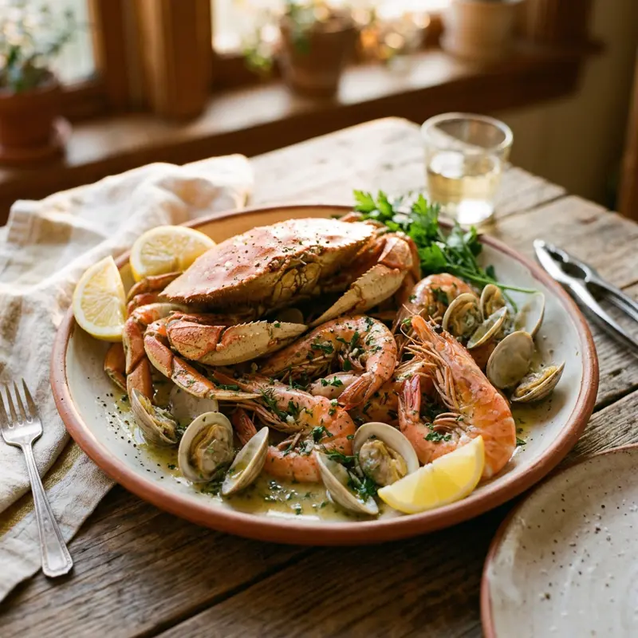

사면이 바다인 대만은 해산물 요리 수준이 매우 높습니다. 가오슝·이란·화롄 같은 항구 도시에서는 그날 잡은 활어를 바로 조리해주는 식당이 많고, 야시장에서는 굴전(蚵仔煎), 새우튀김 같은 캐주얼한 해산물 간식도 인기예요.
무엇이 특별할까요?
01
시가(時價) 메뉴 주의
생선·게 요리는 시가로 표기된 경우가 많아 주문 전 가격을 꼭 확인하세요.
02
굴전(蚵仔煎)
대만식 굴 오믈렛으로 야시장 필수 메뉴. 새콤달콤한 소스가 특징이에요.
03
항구 직송 식당
가오슝 치진, 이란 등 항구 근처 식당은 아침에 들어온 활어로 조리해 신선도가 높아요.
이렇게 즐겨보세요
- ✓'時價'라고 적힌 메뉴는 주문 전 직원에게 가격 재확인
- ✓생굴/조개류는 여름철 위생 상태를 특히 신경써서 고르기
- ✓게·새우는 무게 단위(斤/兩)로 가격이 매겨지는 경우가 많음
- ✓야시장 해산물 노점은 현금 결제 위주
Real spots
전체 화면 지도로 보기 →
여행자들이 등록한 진짜 맛집
이 카테고리에 실제로 등록된 맛집을 지역별로 모아봤어요. 새로 등록되면 여기에도 바로 반영돼요. 핀을 눌러 추천 투표도 남길 수 있어요.
📍타이베이
📍타이난
Join the map
지금 등록하기 →
나만의 맛집을 공유해주세요 🤫
여러분의 발견이 다른 여행자들에게 진짜 대만을 경험하게 해줍니다.